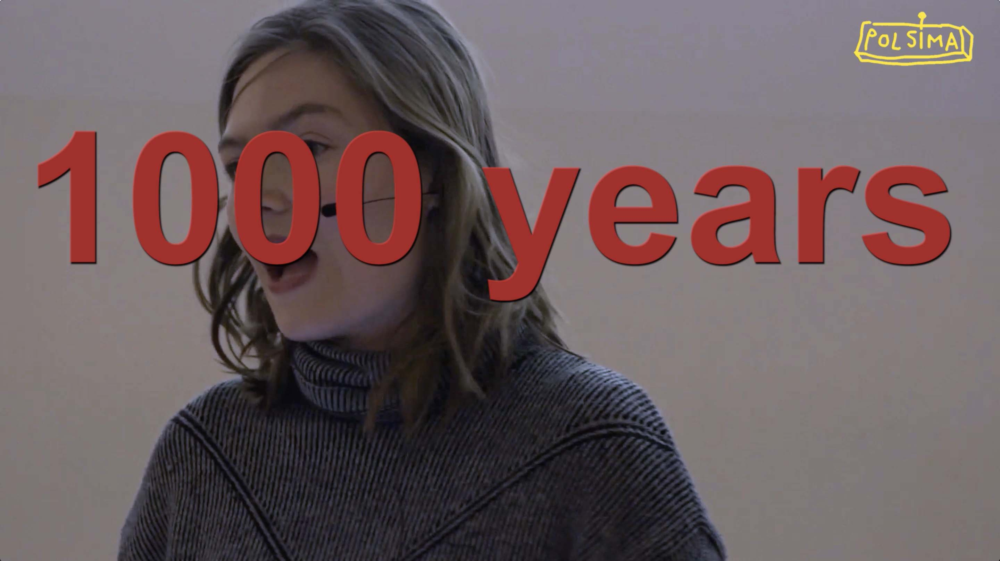
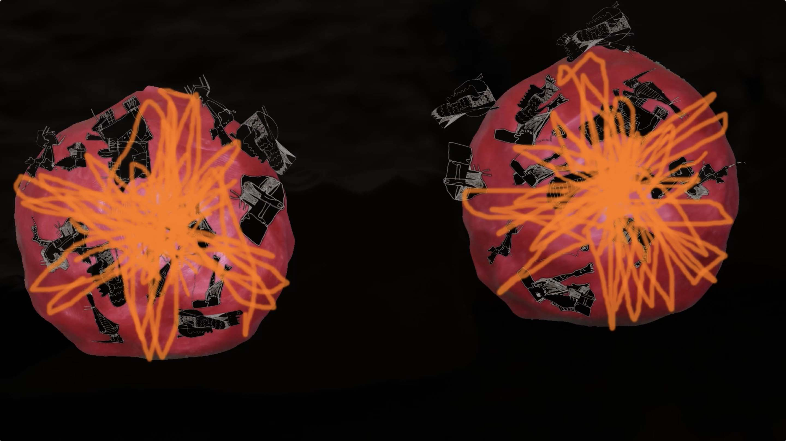
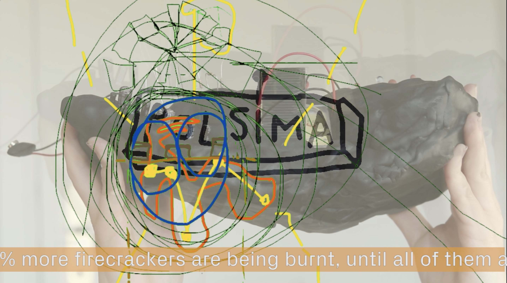
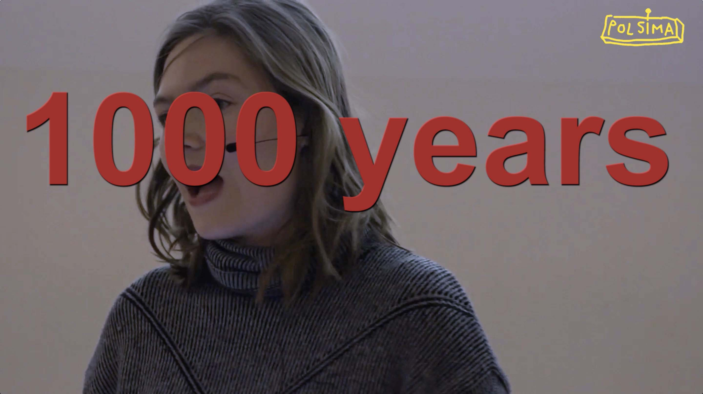
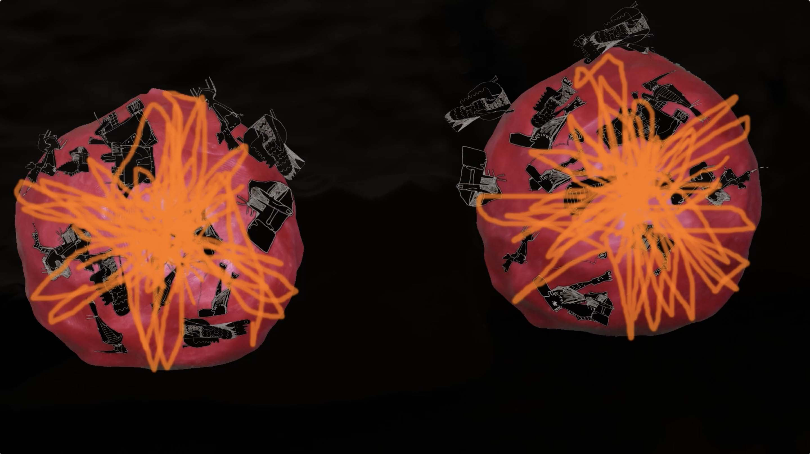
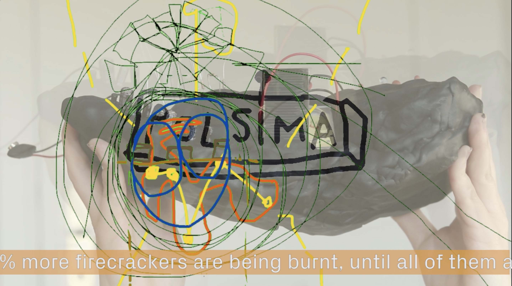

> to selected works
The dream, the corporation, the event chain, the simulation
2019
4-channel video installation
HD, 16:9, 10:12, loop, stereo
sound: Timon Kurz
M8 Art Space, Helsinki, FIN
“We will be able to calculate the future outcome of every tiny decision we take today. We will be able to form the society and the planet we want. Would you like to be part of this movement?”
Polsima, the political-simulator machine, is a highly complex device that can calculate and visually simulate all the future consequences of any political decision. The algorithm is shaped by scientists from all possible disciplines and promises to end political speculations, so finally politics can not fail any more.
This product’s dream-like handicraft and intimate aesthetics soon intertwines with our personal affections at some unnoticed yet undeniable point. There is an inherent horror in the prediction of complex networks of causal events with absurdity always looming close, despite its initial intentions will ‚polsima‘ fulfill a utopian purpose or operate as an object of desire and a neoliberal instrument of power.
Text: Edel O'Reilly